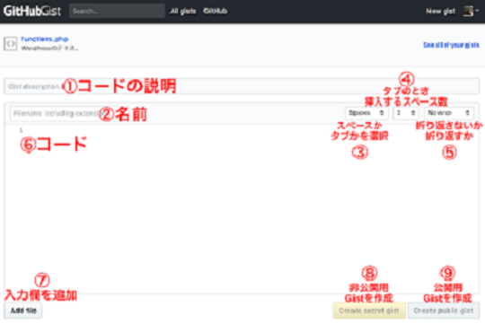

Gistの使い方
Gistの使い方

① Gist description コードの説明を記載します。
② Filename including extension 拡張子を含めたファイル名を入力します。「test_code.php」というように拡張子を含めることで、その言語と紐づけされます。
③ 「Spaces」 or 「Tabs」 インデントをスペースにするかタブにするかを選択します。（よくわからなければ「Spaces」のままで構いません。）
④ 「2」 or 「4」 or 「8」 タブで挿入するスペース数を選択します。（よくわからなければ「2」のままで構いません。）
⑤ 「No wrap」 or 「Soft wrap」 右端まで来たら折り返すかどうかを選択します。「No wrap」だと折り返しなし、「Soft wrap」だと折り返します。
⑥ コードの入力欄 コードを入力します。
⑦ Add file 入力欄を追加する際に使います。
⑧ Create secret gist 非公開用のGistにする際にはこちらを選択します。
⑨ Create public gist 公開用のGistにする際はこちらを選択します。